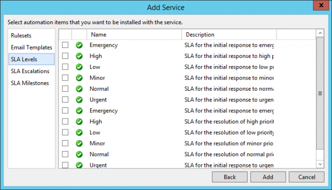

Table Of Contents
- Application Editor
- BusinessTimeSpan Editor
- Composer Theme Editor
- Credentials Manager
- License Status Manager
- LocalMachineInfo Editor
- Log Viewer
- Messaging Console
- Schedule Editor
- Screen Capture Util
- Server Extensions Configurator
- Task Tray Tool
- ToolPreferences Editor
- Workflow Explorer
Application Editor
Start > Programs > Symantec > Workflow Designer > Tools > Application Editor
[Nothing in the User Guide]
Chapter # (pg#) - User Guide
Symantec Glossary
Application Editor
[No Glossary Item]https://www.symantec.com/security\_response/glossary/define.jsp
File Location
"[Install Drive]:\Program Files\Symantec\Workflow\Designer\bin\WorkflowAppEditor.exe"
Screenshots
Click "Create new application" and give it a name.
It will add it to a new "Applications" folder under the default "WorkflowProjects" folder.
Application
There are only a few options in Menus.
And three buttons in the Toolbar.
Save | Package Projects | Create Installer


There are then a number of tabs.
Settings
We will start at the "Settings" tab.
This has a couple of things you can change.
Settings
| Application name: | Application |
|---|---|
| Company name: | name@email.com |

Projects
Click on the "Add Project..." and navigate to your Workflow Projects and click add.
You can then view details about the Projects.
Integration
Forms (WEB)
Automation
Click on "Add Service"
Choose your Service.
There are then a number of items relating to the Service you can add to your Application.
- Rulesets
- Email Templates

- SLA Levels

- SLA Escalations
- SLA Milestones
Licensing
Tick "Enable licensing" to allow you to create a License.
You will need a "Machine key file".
This is created using the "License Status Manager"
This will then be displayed.
Installer
By Default it will show Version 1.0.
There are a number of settings you can fill in.
| Version | 1.0 |
|---|---|
| Logo | [Browse for an image] |
| Installer instructions | [Add any text] |
| Prompt for App Pool selection | |
| Run SQL script | |
| Run Post-Install Wizard | |
| License | [Add any text] |
The "Installer instructions" creates a file
instructions.txt
The License creates a file
eula.txt
These text files can be amended outside of the Application and next time you load it they will show the updated info.
Process View Pages
If you have created any custom Process View Pages you can bundle these into your App.
Click "Add Process View Page" then select any from the List.
These will then display in the grid.

Reports
Any custom Reports can be added too.

Click "Add Report" and search for your chosen Report(s)

Package Projects
You can Package any Projects you've added to the Application. This does the same as when you package an individual project.
Chose a location to save to, it defaults to an "output" folder in the Application Project.

And as always a prompt if you'd like to open the folder.

Create Installer
Once you have everything added to your Application you are ready to create your Installer.
Choose a location (defaults to "output")
This will create it's own file type.
.symwfapp
Installer
Run the "Application.symwfapp" file.
Installation Instructions will show the text you have chosen.

Install Location will default to the WorkflowProjects folder.

You have a chance to review your info before clicking "Install"

[Add Install next steps]